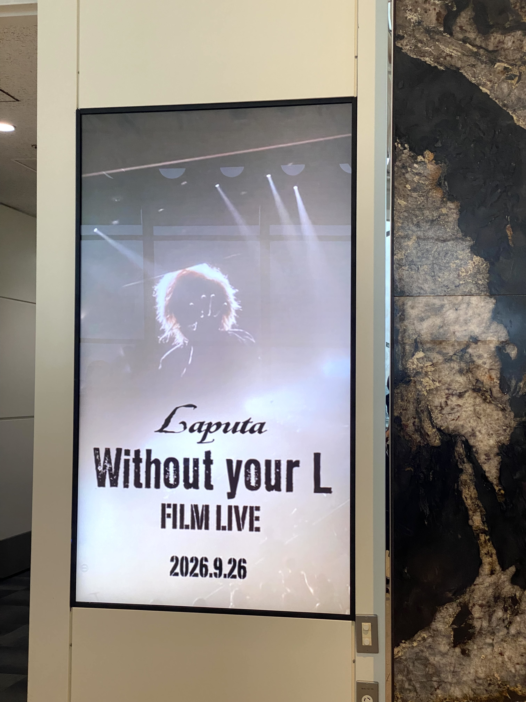
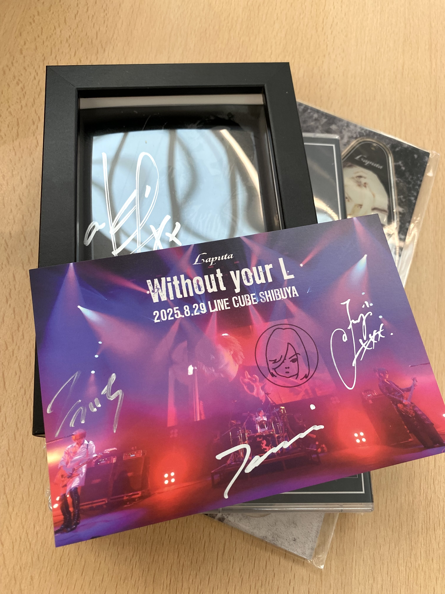
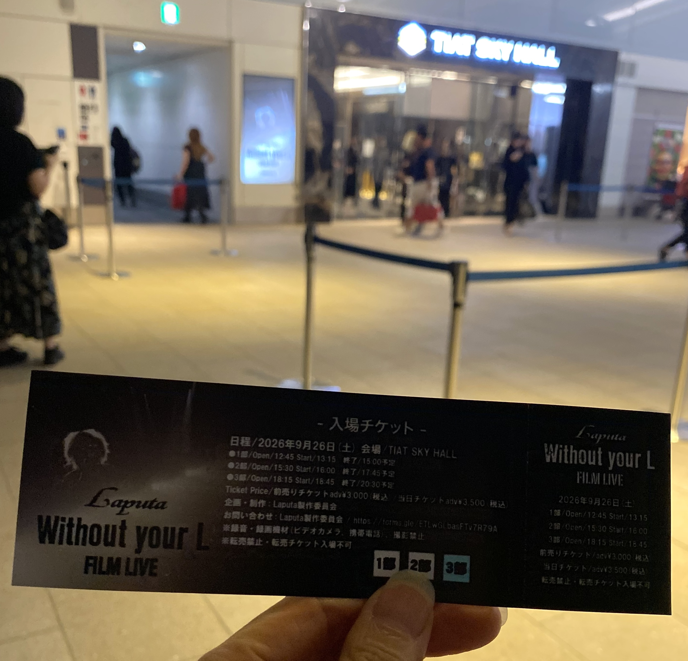

Laputa Without your L FILM LIVE 2026 参加記録
2026.09.30

2026年9月26日、羽田空港にあるTIAT SKY HALLで開催された「Laputa Without your L FILM LIVE」に参加しました。
akiさんが亡くなってから3年。私はもともとの4人編成だったLaputaを一度もライブで見ることができませんでした。そのため、今回が私にとって初めて実際に会場で見る「akiさんのいないLaputa」でした。
2024年には「ALL BURST」、2025年には「Without your L」が行われましたが、私はどちらにも参加していません。2024年のライブを収録したDVDが2025年に発売され、さらに2025年の「Without your L」では、akiさんの存在を消さず、ファンから楽しみを消さない、だからLaputaを続ける、という言葉があったそうです。
2025年当時はこれが最後になると本人たちが考えていたものの、メンバーがライブ前日に話し合った結果、Laputaを続けていくことが決まりました。今回のフィルムライブは、その2025年のライブ映像をもとにした上映イベントです。
そして、この日のMCで一番印象に残ったのが、Kouichiさんから出てきた「新しいakiを発見して」という言葉でした。
これは、2027年のライブに向けて、これまで使われていなかった、あるいはまだ公開されていない過去のakiさんの映像をメンバーたちが探し、編集している、ということだと理解しました。
過去に残された映像を掘り起こし、それを使ってこれからのLaputaを作っていく。「新しいakiを発見して」という言葉には、そんな今後の活動の方向が凝縮されているように感じました。
もうひとつ、この日のMCで特に印象に残ったのが、Kouichiさんの「エアーギター」をめぐるやり取りです。来年の豊洲PITでのライブを発表した際、
Junjiさんが「こーちゃん、ギター弾くんだよ！？」と言い、続けて「エアー、ダメです」。するとKouichiさんが、「失礼なこと言うなぁ！ エアーでやったことなんかない。」
このやり取り、なんだか少し酔っぱらったおじさん同士のようで（笑）、とても面白かったです。
ここでJunjiさんがKouichiさんのことを「こーちゃん」と呼んでいたのも、なんとも微笑ましい場面でした。長く一緒にやってきたメンバー同士の距離感が、ふっと見えた感じがします。
メンバーたちは普段どのように呼び合っているんでしょうか。90年代の音楽雑誌記事では、メンバー同士が「君」付けで呼んでいる記事が多い一方、Junjiさんは末っ子なので「Junji」と呼び捨てにされる場合が多いようでした。JunjiさんがKouichiさんを「こーちゃん」と呼んでいるのは意外でした。
こういう何気ないやり取りを含めて、この日のMCはとても面白かった。でも同時に、メンバー同士にも、そしてファンにも、Laputaへの愛情がたくさん詰まっていたように思います。
2027年のライブについて、さらにKouichiさんは、「akiの映像なくなったら終わりだから。1～2年に1回しかできないけど……Junjiが頑張るからね！」と話していました。
その言葉を聞いて、Laputaが「過去を再現する」のではなく、残されたものを使いながら、akiさんの意思も継いで、できる形で未来へ進もうとしているのかな、と感じました。
2027年9月4日・5日には、豊洲PITでライブが開催されます。
Junjiさんは「Laputaを続けると言った限り、毎年何かする」と話し、KouichiさんもTomoiさんも「来年楽しみにしててください」と語っていました。
「マイペースでやるので、ついてきてください。」
今回のイベントは、私にとってLaputaの過去を見るだけの時間ではありませんでした。今のLaputaがこれからどこへ進んでいくのかを、初めて自分の目で見届けた時間だったと思います。
※手書きのノートをもとにした文字起こしのため、書き損じや記録違いがある可能性があります。ご了承ください。
入場前には、キーホルダーとDVDを購入し、サイン入りのカードもいただきました。


Tomoiさん（T）、Junjiさん（J）、Kouichiさん（K）の順でステージ袖左から登壇。左からK・J・Tの順で並ぶ。
服装は、Kouichiさんが黒のシャツとクロップドパンツ、ウエストベルト、サングラス、革靴。Junjiさんはロングカーデスタイル、革靴。Tomoiさんは黒のジャケット、デニム、キャンバススニーカー（コンバース的な）。
T：朝から来ていましたが、天気の悪い中ありがとう。Without you Lのフィルムライブということで、通しでみています。Kouichiくん、2部は盛り上がったらしいですね、歌ったの？
K：2部に来てくれた人～？（2部参加の廃人さん手を上げる）
T：楽屋でモニターで見てて、声がよく聞こえた。3部のMCは僕ということで。フィルムライブの内容はDVDの編集とは違っていて、本日用に用意しました。音も良くて、臨場感あふれる内容です。
J：お知らせですが、もう知っている人もいると思いますが、Laputaは、来年9月4日と5日、豊洲PITでライブをします。
T：曲順とかもう話しているしアイデアも出ているので、見に来てください。
J：ライブ2daysやるから空けておいて
K：（突然サングラスを客席に投げる）あげるっ！（廃人たちの黄色い声）
J：Laputaを続けると言った限り、毎年何かするので、楽しみにしててください。僕一生懸命頑張ります。こーちゃん、ピットに向けてなにかある？
K：何が？
J：2days大丈夫ですか？
K：……
J：ギター弾くんだよ！？
K：まじで？
J：エアー、ダメです。
K：失礼なこと言うなぁ！ エアーでやったことなんかない。
K：新しいakiを発見して……見つけるのはこいつ（J）なんだけど、編集で、昨年演っていない曲も演る。
J：曲順はKouichi君が決めた。
J：リクエスト受け付けないの？ あと1、2曲いけるんじゃない？
K：無理。無理っていうか、来たら泣くで？
J：約束しますか？
J：akiの映像頑張ってね。
K：だからぁ、2部でも言ったけど、akiの映像なくなったら終わりだから。1～2年に1回しかできないけど……Junjiが頑張るからね！
T：では、楽しんでください。
昨年の内容から一部の曲を抜いて上映。曲目は後述。
上映会の最後には、「2027年9月4日、5日、豊洲PITでライブ開催決定！」と表示されました。
J：お疲れ様でした
T：ありがとうございました
J：ギタリストは深い眠りに入って……
K：一応起きたけど！
（会場後ろからKouichiさんが登場し、客席中央の通路を通ってステージへ。最後に1列目の人の髪をくちゃくちゃにしながら！）
K：目覚めた……（と言いながらステージ上へ）
T：……（なんとも言えない表情）いかがでしたか？
J：3部ありがとうございました。今年のLaputaは、人前での活動は最後ですが、来年9月4、5日、本当によろしくお願いします！
T：約一年後ですが、楽しみにしてますんで、お会いしましょう。
K：……？
J：最後に写真撮りましょうか、Kouichiくんと。
K：まじで？
J：顔ダメな人隠して～
（スタッフがステージからスマホでLaputaと客席の写真を3枚ほど撮る）
J：誰かのSNSの中で乗っけるかもしれませんが、こうやって1年に1回だけでも皆さんに会える。マイペースでやるので、ついてきてください。
T：今日はありがとうございました。
K：これ3部ですか？ 3部の割にはすごく人が来てる、なんでっていうのか。おそらく俺のファンばかりだけど（突然投げキッス）。来年楽しみにしててください。
J：気をつけて帰ってください。（終わり）
当日の上映順は以下のとおりでした。
この日のイベントは、笑ってしまうようなMCもあれば、涙が止まらなくなる瞬間もありました。
メンバー同士のやり取りはどこか可笑しくて、でもその奥には、akiさんへの思いと、Laputaを待ち続けるファンへの思いが感じられました。
私にとっては、これが初めて見る「今のLaputa」でした。akiさんがいた頃のLaputaをライブで見ることはできなかったけれど、残された映像を通して、その時間に触れることはできる。そして今のメンバーは、その映像を過去に置き去りにするのではなく、「新しいakiを発見して」、次のライブへつなげようとしている。
その姿を実際に会場で見ることができたことは、私にとって大きな意味のある一日でした。